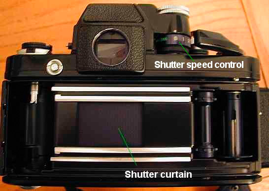

|
Camera (very) FundamentalsVersion 2.1, page 2, © 2002, 2006 by Dale Cotton, all rights reserved Chapter Two: Shutters and Exposure Times
Fig 4. The Mark I box camera To get an image on a frame of film or the sensor in a digital camera we need to precisely control the dose of light that reaches it, and we have two separate tools to do that job - the shutter and the lens aperture. But first, let's imagine a camera without these tools. The simplest possible camera (camera means room or chamber in Latin) is a light-tight box with film inside at one end and a lens at the other. Let's call this the Mark I camera. However, a camera that simple isn't light-tight since the lens is made of clear glass. So to take a picture with the Mark I camera you have to:
Clearly this hand-over-lens business would get old very quickly. So instead we make a Mark II camera.
Fig 5. The Mark II box camera with removable shutter panel This model has a panel inside the box that keeps the film portion of the box dark (no light from the lens can get past the panel and reach the film), but the panel sticks out far enough past the side of the box so we can grip it. We can pull the panel out to let light from the lens hit the film then push it back in to block the light again. We call such a panel a shutter; it's the mechanical equivalent of an eyelid or blindfold for the film. Now we can happily use our box camera 'til the cows come home without worrying about keeping a hand over the lens all the time.  Fig 6. Modern camera shutter A modern camera has an automatic shutter that is spring-loaded. When you press the picture-taking button on your camera, called the shutter release, it lets the shutter snap open for a specific period of time then snap shut again. When the shutter is open the light coming through the lens is no longer blocked and shines on to the rectangular portion of film just behind the shutter window. (Modern shutters are actually more complex even than that, but this is enough of the idea to get by with until you get into flash photography.) Digital: Digital cameras also have shutters. The technology used varies from model to model, but they nevertheless perform exactly the same function as described herein. To use a shutter panel to control how much light reaches the film we set the shutter speed control. We might set it to let light hit the film for 1/500th of a second, for example. Modern shutter speed controls have a standard scale of possible exposure times: 2' - 1' - 1/2' - 1/4' - 1/8' - 1/15' - 1/30' - 1/60' - 1/125' - 1/250' - 1/500' - 1/1000' - 1/2000' Many cameras have longer choices, such as 4 sec. or 8 sec. (on the left); and some have shorter choices, such as 1/4000 sec. (on the right). The Nikon F2 in Fig 1 was an advanced professional camera back in 1972. You can see that all the shutter speeds in the list above - except for the 2 second setting - are marked on its shutter dial. Key fact: the shutter speed choices are just like ISO ratings: each one doubles the one before it and halves the one after it (with a bit of fudging here and there). Confusing fact: Recent cameras provide even finer gradations between the standard shutter speeds listed above. For example, my Nikon F2 from 1972 has the doubling/halving scale shown above, but the Nikon F80 has a half-way choice between each. For example, there is a 1/45th second setting between 1/30 and 1/60. Most professional cameras actually divide each step into thirds, which was necessary due to the exacting exposure requirements of slide film. |
| - 2 - |


{kind=link}